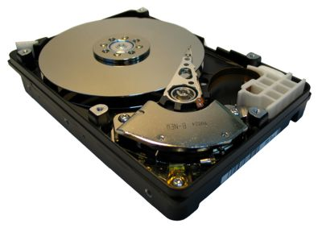

Tento typ paměti naopak žádnou energii na uchovávání dat nepotřebuje. Bývá však pomalejší než volatilní paměť. Používá se většinou jako dlouhodobé úložiště dat.
ROM
Paměť ROM neboli Read-Only Memory, umožňuje data jen číst. Slouží jako dlouhodobé úložiště. Obsahuje základní instrukce pro startování počítače. Obsah ROM je do paměti vložen při výrobě, proto se jejich výroba vyplatí jen ve větších skupinách. Když je chyba v paměti, je potřeba ji celou vyměnit. I když se rychlosti pamětí ROM a RAM časem měnily, od roku 2007 jsou paměti RAM schopny číst data mnohem rychleji než většina pamětí ROM. Proto se někdy obsah paměti ROM zkopíruje do paměti RAM, nebo je stínován před jejím použitím a poté přečten z paměti RAM.
Flash paměť
Paměť Flash se používá jako paměť typu ROM. Na rozdíl od paměti ROM jde do Flash paměti data přepisovat. Dnes je to velmi rozšířený typ dlouhodobé paměti. Používá se např. v SSD, Flash USB a paměťových kartách.
Flash USB
Paměti Flash USB se většinou používají k přenášení a zálohování dat mezi počítači. Je založeno na Flash paměti. Jsou malé, a proto snadno přenosné. Je možné koupit USB flash disk s velikostí až 1 TB. USB flash disky jsou nástupci dříve používaných CD, DVD a disket. Výhodou je jejich menší velikost a váha. Jsou odolnější oproti magnetům a nevadí jim poškrábání.
Paměťová karta
Je to zařízení, které uchovává data. Používá se např. ve fotoaparátech, laptopech a telefonech. Je založené na typu paměti flash. Byla vyrobena jako náhrada pro zařízení, ve kterých se pevný disk nemohl použít. V dnešní době se karty zmenšují ve velikosti, ale zvětšují v kapacitě, která může dosáhnout až dokonce 1 TB.
Vnější paměť
Vnější paměť slouží pro dlouhodobé ukládání dat. Používá se ve všech různých zařízeních, které potřebují ukládat data. Data z vnější paměti se pro práci načtou do paměti vnitřní a pak vytvořená data z vnitřní paměti se uloží zpět na vnější paměť.
HDD
Paměť HDD (Hard Disk Drive) neboli pevný disk je zařízení pro ukládání a čtení dat. Má velkou kapacitu, ale je pomalejší než paměť RAM. Používá se v počítačích jako sekundární paměť k uchovávání většího množství dat. Obsahuje pohyblivé mechanické části. Má dobrý poměr kapacity a ceny s dost dobrou rychlostí čtení a zápisu dat. Nevýhodou je mechanické provedení disku, které je technologicky náročné, má velkou spotřebu energie, velkou hmotnost a je náchylné na poškození při špatném jednání.

SSD
Paměť SSD neboli Solid-State Drive je zařízení, které ukládá jenom data. Obsahuje paměť typu Flash. Je nástupcem pevných disků a neobsahuje pohyblivé mechanické části. Proto je jeho výhodou odolnost, tichost, nízká spotřeba energie a rychlejší přístup k datům. Nevýhodou je, že má vyšší cenu a životnost nebo naopak nižší cena a životnost.